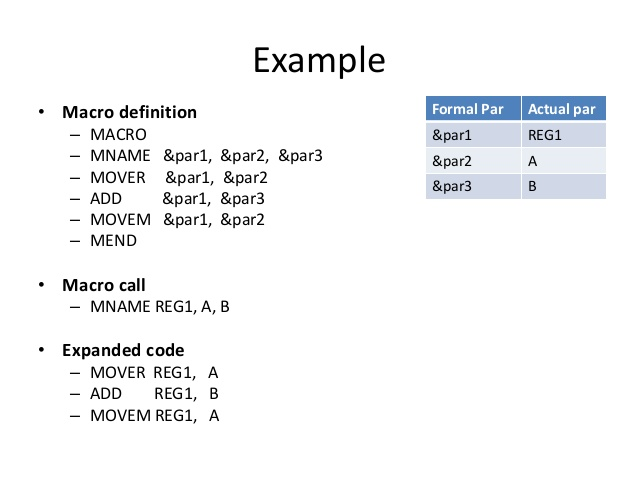

* Definition of Macro:
“A macro is a unit of specification for program generation through expansion.”
A macro definition is enclosed between a macro header statement and a macro end statement of the macro.
A macro definition consists of:-
A macro prototype statement declares the name of a macro & the names & kinds of its parameters.
Syntax:- < macro name > [< formal parameter specification > [ ,….]]
Where,
< macro name > apperes in the mnemonic field of an assembly statement.
< formal parameter specification > is of the form & < parameter name >[< parameter kind >].
A model statement is a statement from which an assembly language statement may be generated during macro expansion.
A pre-processor statement is used to perform auxiliary functions during macro expansion.
macro
incr &mem_val,&incr_val,®=areg
mover ®,&mem_val
add ®,&incr_val
movem ®,&mem_val
mend
A macro call is called by writing the macro name in the mnemonic field of an assembly statement.
Syntax:- < macro name > [< actual parameter specification > [ ,….]]
Where,
An actual parameter typically resembles an operand specification in an assembly language statement.
e.g. incr A,B
In this example we can see that A, B are actual parameters.
To implement the macro expansion we need to know the variety of tables as follows:
1. APTAB=actual parameter table:
This table contains the list of actual parameters which are required at the time of expansion of the macro.
2. PNTAB= parameter name table:
This table contains the list of parameters which includes both keyword as well as positional parameters.
3. KPDTAB=keyword parameter default table:
This table contains the list of all default parameters that must be used while expanding the code that is at the time of macro expansion.
4. MDT= macro definition table:
This table contains the information about each parameter used in the macro definition. The entries for each statement will decide the actual parameters in the expanded code.
e.g. mover ®,&mem_val from the macro definition will be changed in the MDT as follows:
mover (p,2),(p,0)
(p,2) stands for areg, because we know parameter at second second location is the areg only.
(p,0) stands for A, as A is one of the memory location used in the statement.
Let’s see the example:
